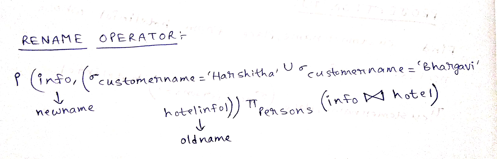
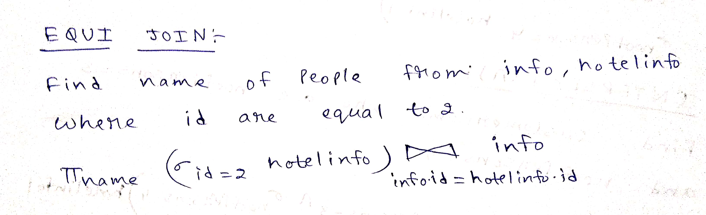
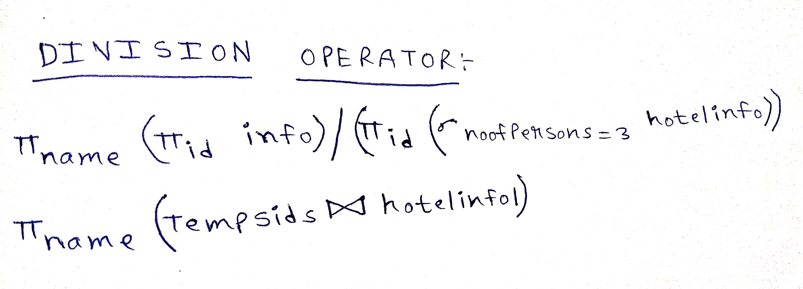

Relational algebra BINARY OPERATORS
1.Rename
**It is used to change the name of any column expression.

2.Joins
Combining two or more tables into a single table.
- Conditional join
- Equi join

- Natural join
3.Division Operator
**Division operator A÷B can be applied if and only if:
Attributes of B is proper subset of Attributes of A.
The relation returned by division operator will have attributes = (All attributes of A – All Attributes of B)
The relation returned by division operator will return those tuples from relation A which are associated to every B’s tuple.
